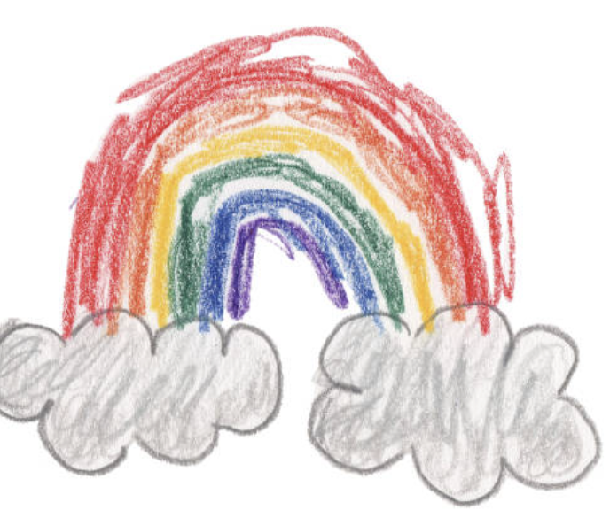

conectamos a las familias con niñeras profesionales en Tenerife
conectamos a las familias con niñeras profesionales en Tenerife
familias tranquilas
niñeras verificadas
niños protegidos
Cuidado infantil personalizado — desde una niñera por horas hasta una niñera permanente de jornada completa. Cada familia es distinta, cada match se verifica.
Un canguro exclusivo para tu familia — continuidad, jornadas completas o régimen interno.
Solo unas horas, justo cuando las necesitas. Cita, reunión, recogida del cole.
Servicio de canguro el mismo día para situaciones urgentes. Nos movemos rápido por ti.
Apoyo escolar a domicilio combinado con cuidado — deberes y una cuidadora estable en uno.
Bodas, cumpleaños y reuniones familiares. Planificamos actividades, materiales y cuidadoras cualificadas.
Cuidadoras en español e inglés que ayudan a los peques a absorber idiomas de forma natural — la especialidad de Melania.
Cuidamos a los peques y nos encargamos de la compra, el cole o las citas mientras trabajas.
Mañanas de playa, tardes de piscina, paseos y juego creativo — actividades planificadas, no solo supervisión.
Los precios varían según horas, frecuencia y tipo de servicio. Cuéntanos lo que necesitas y te enviamos un presupuesto personalizado.
Cuidadoras cuando realmente las necesitas — última hora incluida.
Historial verificable, formación en desarrollo infantil y referencias que funcionan.
Verificación de antecedentes, comprobación de referencias y entrevistas en persona.
Adaptamos la niñera a tu familia, nunca al revés.
Revisión de CV · entrevista · referencias · antecedentes · evaluación final de habilidades.
Un único contacto, actualizaciones claras, sin sorpresas.
Cada niñera de nuestra red pasa el mismo proceso de cinco pasos — así garantizamos confianza, fiabilidad y seguridad.
Un mensaje rápido sobre tu familia, tu horario y el tipo de cuidado que buscas.
Elegimos a mano la cuidadora que mejor se adapta a tu familia — nunca al revés.
¡Reserva tu día y respira! Nosotros nos encargamos del resto.
